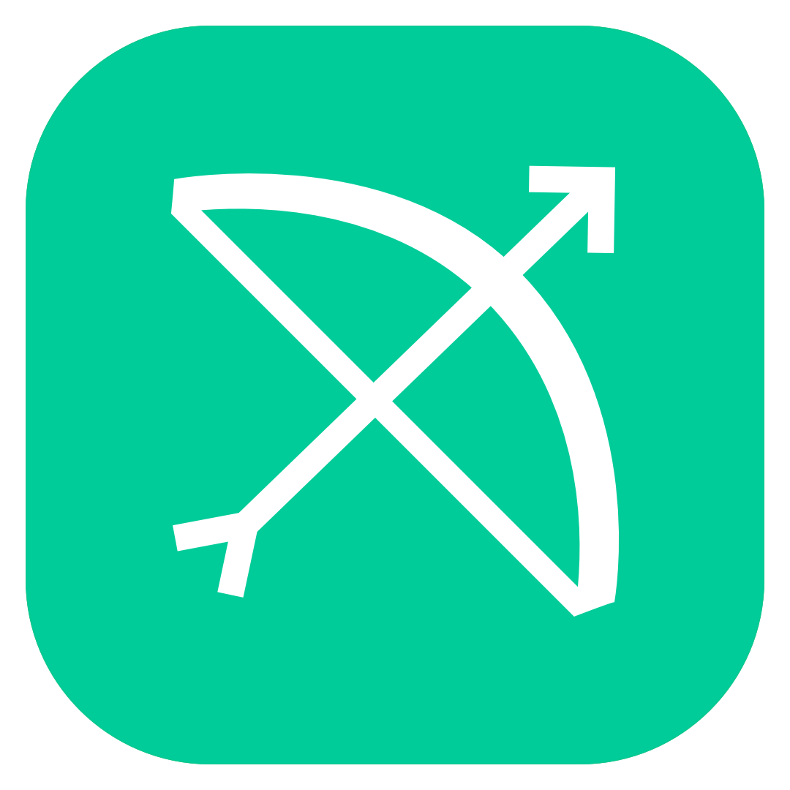
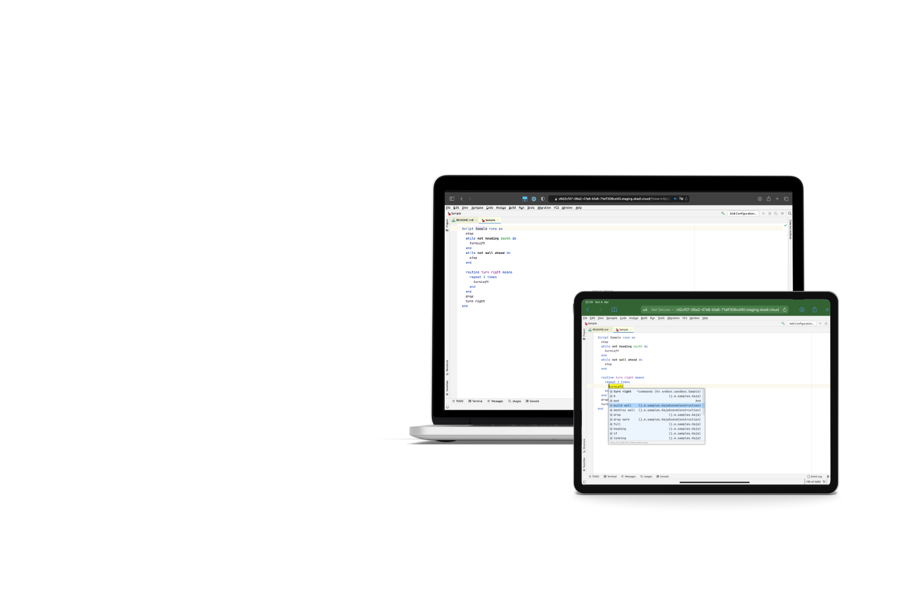

An experiment with Projector to put JetBrains MPS into the browser.

Skadi was a MPS playground in the browser. It was built as a demo of what was possible with JetBrains Projector and MPS. It was not a real service like Codespaces by GitHub or similar — it was a tech demo and was treated as such. Users were able to play around with MPS without installing anything. Skadi included a bunch of samples including KernelF to explore MPS.
KernelF was a functional base language for building domain specific languages on top of it. Skadi was built using JetBrains Projector, a framework for remote access to Java applications, Kubernetes and JetBrains Meta Programming System.
As a demo to the community, as an impulse to get new ideas and discussions started. A while back I wrote down my ideas how Projector and MPS could be used together and this was essentially the implementation of one of those ideas.
As mentioned this was a demo to the community and not a commercial service. The running costs were paid out of pocket. The demo has now been shut down.
Definitely NOT. This playground was more of a proof of concept to show what was possible with Projector, Kubernetes and MPS. Data could get deleted at any time and the playground could be shut down.
Skadi is the Norse giant goddess of winter, hunting, and skiing.
Yes. But it was highly recommended to use a physical keyboard. Key mappings could get weird and might not work as expected. Especially on iOS keyboard shortcuts tended to behave strangely.
Most likely. This was a proof of concept and implemented as such. Projector, the underlying technology used to give access to the IDE, was young technology and likely also contained bugs. It was a playground for experimenting with non-sensitive data.
While the connection was encrypted there was no additional authentication in place. If the link, including the token, to an instance got leaked, anyone with the link could connect to it. The playground list provided two links: one that granted full access and one that was read only.
Yes, but the JetBrains plugins for GitHub did not work. The authentication workflow would fail because it assumed you were on your own machine and not in a browser. Personal access tokens could be used as a workaround.
Users had 10GB of persistent storage in the user directory
/home/projector-user
. Everything else was not persisted and would be deleted if the instance was shut down or restarted. 10GB was plenty of space for playing around with MPS.
The plugin was responsible for detecting whether a user was connected to the IDE or not. If there was no connection to a playground for more than 30 minutes the playground was shut down automatically. Users could start it again from the playground overview and reconnect.
Playgrounds were kept for 30 days after being shut down. After 30 days of inactivity the playground was deleted entirely.
Information in accordance with Section 5 TMG
Kolja Dummann
Rüderner Str. 2
70329 Stuttgart
This service is no longer active. No cookies or personal data are collected on this archived page.